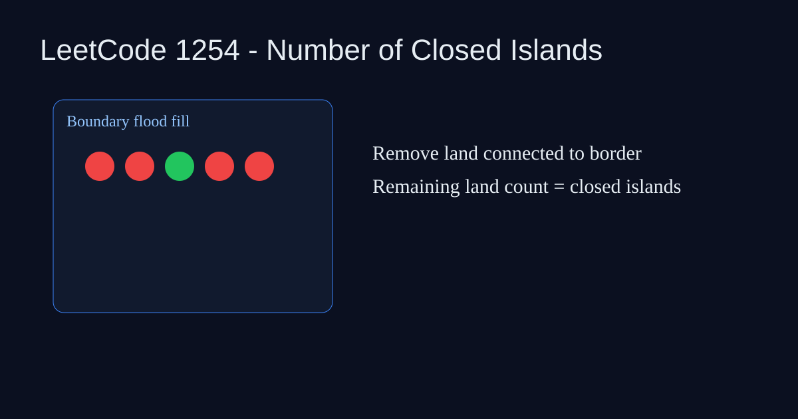

LeetCode 1254: Number of Closed Islands (Grid DFS)
LeetCode 1254GridFlood FillSource: https://leetcode.com/problems/number-of-closed-islands/

English
Flood-fill all boundary-connected land to sea. Remaining land cells cannot reach boundary, so they are closed islands.
class Solution {int m,n;int[][] g;int[] d={1,0,-1,0,1};public int numEnclaves(int[][] grid){g=grid;m=grid.length;n=grid[0].length;for(int i=0;i=m||c<0||c>=n||g[r][c]==0)return;g[r][c]=0;for(int k=0;k<4;k++)dfs(r+d[k],c+d[k+1]);}} func numEnclaves(grid [][]int) int {m,n:=len(grid),len(grid[0]);dirs:=[][2]int{{1,0},{-1,0},{0,1},{0,-1}};var dfs func(int,int);dfs=func(r,c int){if r<0||r>=m||c<0||c>=n||grid[r][c]==0{return};grid[r][c]=0;for _,d:=range dirs{dfs(r+d[0],c+d[1])}};for i:=0;i<m;i++{dfs(i,0);dfs(i,n-1)};for j:=0;j<n;j++{dfs(0,j);dfs(m-1,j)};ans:=0;for i:=0;i<m;i++{for j:=0;j<n;j++{ans+=grid[i][j]}};return ans}class Solution{public:int m,n;vector<vector<int>>*g;void dfs(int r,int c){if(r<0||r>=m||c<0||c>=n||(*g)[r][c]==0)return;(*g)[r][c]=0;dfs(r+1,c);dfs(r-1,c);dfs(r,c+1);dfs(r,c-1);}int numEnclaves(vector<vector<int>>& grid){g=&grid;m=grid.size();n=grid[0].size();for(int i=0;i<m;i++)dfs(i,0),dfs(i,n-1);for(int j=0;j<n;j++)dfs(0,j),dfs(m-1,j);int ans=0;for(auto& r:grid)for(int v:r)ans+=v;return ans;}};class Solution:
def numEnclaves(self, grid):
m, n = len(grid), len(grid[0])
def dfs(r, c):
if r<0 or r>=m or c<0 or c>=n or grid[r][c]==0: return
grid[r][c]=0
dfs(r+1,c); dfs(r-1,c); dfs(r,c+1); dfs(r,c-1)
for i in range(m): dfs(i,0); dfs(i,n-1)
for j in range(n): dfs(0,j); dfs(m-1,j)
return sum(sum(r) for r in grid)var numEnclaves=function(grid){const m=grid.length,n=grid[0].length;const dfs=(r,c)=>{if(r<0||r>=m||c<0||c>=n||grid[r][c]===0)return;grid[r][c]=0;dfs(r+1,c);dfs(r-1,c);dfs(r,c+1);dfs(r,c-1);};for(let i=0;i<m;i++){dfs(i,0);dfs(i,n-1);}for(let j=0;j<n;j++){dfs(0,j);dfs(m-1,j);}let ans=0;for(const row of grid)for(const v of row)ans+=v;return ans;};中文
先把所有与边界连通的陆地全部淹没，剩下无法走到边界的陆地数量就是封闭岛屿数。
class Solution {int m,n;int[][] g;int[] d={1,0,-1,0,1};public int numEnclaves(int[][] grid){g=grid;m=grid.length;n=grid[0].length;for(int i=0;i=m||c<0||c>=n||g[r][c]==0)return;g[r][c]=0;for(int k=0;k<4;k++)dfs(r+d[k],c+d[k+1]);}} func numEnclaves(grid [][]int) int {m,n:=len(grid),len(grid[0]);dirs:=[][2]int{{1,0},{-1,0},{0,1},{0,-1}};var dfs func(int,int);dfs=func(r,c int){if r<0||r>=m||c<0||c>=n||grid[r][c]==0{return};grid[r][c]=0;for _,d:=range dirs{dfs(r+d[0],c+d[1])}};for i:=0;i<m;i++{dfs(i,0);dfs(i,n-1)};for j:=0;j<n;j++{dfs(0,j);dfs(m-1,j)};ans:=0;for i:=0;i<m;i++{for j:=0;j<n;j++{ans+=grid[i][j]}};return ans}class Solution{public:int m,n;vector<vector<int>>*g;void dfs(int r,int c){if(r<0||r>=m||c<0||c>=n||(*g)[r][c]==0)return;(*g)[r][c]=0;dfs(r+1,c);dfs(r-1,c);dfs(r,c+1);dfs(r,c-1);}int numEnclaves(vector<vector<int>>& grid){g=&grid;m=grid.size();n=grid[0].size();for(int i=0;i<m;i++)dfs(i,0),dfs(i,n-1);for(int j=0;j<n;j++)dfs(0,j),dfs(m-1,j);int ans=0;for(auto& r:grid)for(int v:r)ans+=v;return ans;}};class Solution:
def numEnclaves(self, grid):
m, n = len(grid), len(grid[0])
def dfs(r, c):
if r<0 or r>=m or c<0 or c>=n or grid[r][c]==0: return
grid[r][c]=0
dfs(r+1,c); dfs(r-1,c); dfs(r,c+1); dfs(r,c-1)
for i in range(m): dfs(i,0); dfs(i,n-1)
for j in range(n): dfs(0,j); dfs(m-1,j)
return sum(sum(r) for r in grid)var numEnclaves=function(grid){const m=grid.length,n=grid[0].length;const dfs=(r,c)=>{if(r<0||r>=m||c<0||c>=n||grid[r][c]===0)return;grid[r][c]=0;dfs(r+1,c);dfs(r-1,c);dfs(r,c+1);dfs(r,c-1);};for(let i=0;i<m;i++){dfs(i,0);dfs(i,n-1);}for(let j=0;j<n;j++){dfs(0,j);dfs(m-1,j);}let ans=0;for(const row of grid)for(const v of row)ans+=v;return ans;};
Comments